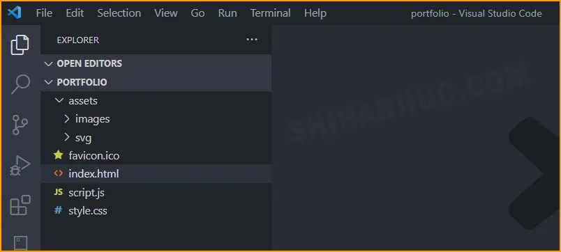

PORTFOLIO WEBSITE DESIGN WITH HTML CSS[SOURCE CODE]
Updated:June 10,2023 | Published:March 26,2022 | Written by Shihab UI Haque
PORTFOLIO WEBSITE DESIGN WITH HTML CSS[SOURCE CODE]
Updated:June 10,2023 | Published:March 26,2022 | Written by Shihab UI Haque
A portfolio is a great way to showcase your expertise. It also increases the chance of getting hired. I will show you a step-by-step guideline on how to design a portfolio website using only HTML,CSS & a few lines of simple Javascript.
hello@shihabiiuc.com
End of this post, you will get the portfolio website source code and you’re free to edit the template as you see fit. Before we start together, see the finished product (live demo) that you are going to build.
It’s completely mobile responsive, fast loading, and easy to customize the template. It shows a portfolio for a freelance graphic designer. But you can make changes according to your niche. Such as website designers, freelance writers, SEO experts, and anyone who needs a portfolio website in the tech industry.
End of this guide, you’ll get a fully mobile responsive portfolio website with all the necessary features that a professional has. But these are not just limited to:
Most importantly, i have not used any css framework on this template such as Bootstrap, Zurb foundation, etc. And not even JavaScript libaries like jQuery.
So your website will load quickly & you`ll understand the source code very easily.You have to have a basic understanding of HTML & CSS. I used the minimum amount of JavaScript for mobile navigation.
But it’s not a problem if you don’t know JavaScript. There are only 5 lines of JavaScript that are very easy to understand by beginners but if you don’t, you can still follow me without any trouble.
Downloading someone else’s code without understanding is not very educational. Of course, you’ll get the portfolio website source code at the end.
But it’s very important to understand the code. So it will be easier for you to make necessary edits and add new things.
Even, you can create a better version than me.
Don’t worry! I will make the process super simple so everyone can digest it. We need three primary files: index.html, style.css & script.js. Also, we need a folder that will keep all of our images. See the file structure below:
Portfolio website file structure